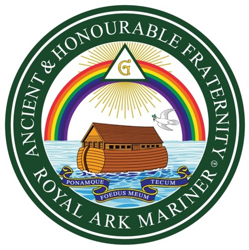

«Foedus Meum Ponamque Tecum — Estableceré Mi Pacto Contigo»
Los Marineros del Arca Real — en inglés Royal Ark Mariner — conforman una de las órdenes masónicas más antiguas y veneradas dentro del sistema escocés. Su grado único se confiere en Logias Arca que trabajan bajo la Logia de Maestros Marcas a la que están anejas.
La orden toma como fundamento alegórico la historia del Diluvio Universal y el Arca de Noé, narrando el pacto eterno entre el Creador y la humanidad, sellado por el arco iris. El lema oficial — Foedus Meum Ponamque Tecum — proviene del Génesis y significa «Estableceré Mi Pacto Contigo».
En el Perú, la Gran Logia del Arca Real regula las Logias Arca bajo la obediencia del Grand Lodge of Royal Ark Mariners de Gran Bretaña, preservando el ritual y la tradición desde el siglo XIX.
Símbolo del pacto divino con Noé, el arco iris corona toda la iconografía de los Marineros del Arca Real.
La nave de la salvación es el símbolo central de la orden, representando la preservación de la humanidad y la virtud.
Mensajera de la paz y portadora del ramo de olivo, anuncia el fin del diluvio y el inicio de una nueva era de esperanza.
Dentro del triángulo radiante, la letra G recuerda al Gran Arquitecto del Universo, origen y fin de toda la sabiduría masónica.
A diferencia de otros sistemas con múltiples grados, los Marineros del Arca Real confieren un único grado de profunda riqueza simbólica y alegórica. El candidato debe ser Maestro Masón en regla y haber recibido el grado de Maestro de Marca.
Todo candidato al grado de Marinero del Arca Real debe ser Maestro Masón regular y poseer el grado de Maestro de Marca, ambos bajo obediencia reconocida.
El grado supremo y único de la orden. A través de la alegoría del diluvio y del Arca de Noé, el candidato recibe las enseñanzas del pacto eterno y la promesa de salvación.
El Comandante del Arca preside la Logia, asistido por el Primer y Segundo Oficial, el Piloto, el Capellán y demás cargos que gobiernan los trabajos del grado.
El grado de Marinero del Arca Real tiene raíces en las logias de la costa oeste de Inglaterra. Las primeras referencias documentadas lo sitúan en Bristol hacia 1790, vinculadas al comercio marítimo y a las cofradías de constructores navales.
El Supreme Grand Royal Arch Chapter of Scotland y posteriormente la Gran Logia Unida de Inglaterra formalizan el gobierno del grado, unificando las Logias Arca bajo una sola obediencia regular.
Los primeros Maestros de Marca con el grado de Marinero del Arca Real se reúnen en Lima bajo patente escocesa, estableciendo la primera Logia Arca en territorio peruano y dando inicio a la tradición nacional de la orden.
Logias Arca se constituyen en Arequipa y Trujillo, extendiendo la enseñanza del pacto noético a los hermanos Maestros de Marca del interior del país.
La Gran Logia del Arca Real del Perú consolida su presencia institucional y digital, manteniendo la pureza ritual y la fraternidad con las grandes potencias que gobiernan la orden en el mundo.
Con sede en Gran Bretaña, es la máxima autoridad mundial de la orden. La Gran Logia del Perú trabaja en estrecha comunión fraternal con ella, preservando la uniformidad del ritual.
«Estableceré Mi Pacto Contigo» — lema de la orden tomado del libro del Génesis (6:18), que sintetiza la promesa de protección y redención en el corazón de los Marineros del Arca Real.
Logia fundadora y sede de la Gran Logia del Arca Real del Perú. Preserva la liturgia original del grado y guía a las demás Logias Arca del distrito.
Lleva el nombre del monte donde el Arca de Noé encontró reposo. Trabaja con especial énfasis en la dimensión filosófica y bíblica del grado.
Custodio del grado en el sur del Perú. Su nombre evoca a la paloma mensajera de Noé, símbolo de esperanza, paz y renovación tras el diluvio.
Fundada en el norte del Perú, lleva el nombre del libro que contiene la narración del diluvio y el pacto de Dios con Noé, fundamento teológico de la orden.
Vinculada a la tradición marítima del primer puerto del Perú, esta Logia Arca honra con especial fervor la vocación náutica inherente a los Marineros del Arca Real.
¿Desea constituir una nueva Logia Arca? La Gran Logia del Arca Real del Perú recibe peticiones de grupos de Maestros de Marca debidamente reunidos.
«Y Dios dijo: Pongo mi arco en las nubes, el cual será por señal del pacto entre mí y la tierra.»— Génesis 9:13 · Fundamento Escritural de la Orden
Como Noé creyó en la promesa divina y construyó el Arca sin ver aún la lluvia, el Marinero del Arca Real cultiva una fe inquebrantable que precede a toda evidencia visible.
El arco iris al término del diluvio es el símbolo eterno de la esperanza renovada. El Marinero vive orientado hacia la promesa de luz que sigue a toda tribulación.
Noé preservó toda forma de vida en el Arca. El Marinero extiende la misma solicitud universal, reconociendo en cada ser humano un pasajero del mismo Arca de la existencia.
Símbolo central de la orden. Los siete colores del arco iris representan los siete dones del espíritu y el pacto eterno sellado entre el Creador y la humanidad tras el diluvio de Noé.
Nave de salvación construida por Noé según instrucción divina. Representa la iglesia, la fraternidad y todo refugio que protege a los justos en tiempos de tribulación universal.
El triángulo que irradia la «G» del Gran Arquitecto del Universo corona la iconografía de la orden, recordando que toda sabiduría procede de la fuente divina.
La paloma que regresa al Arca llevando un ramo de olivo fresco anuncia el fin de las aguas y el inicio de la paz. Símbolo de esperanza y del retorno a la tierra firme de la virtud.
Las aguas del gran diluvio representan la purificación universal. En la liturgia del grado, el candidato atraviesa simbólicamente las aguas para ser regenerado y renovado en virtud.
El ancla, símbolo marítimo por excelencia, representa la esperanza firme y segura que ancla el alma del Marinero del Arca Real en medio de las tormentas de la vida.
Para recibir el grado de Marinero del Arca Real se requiere ser Maestro Masón regular y poseer el grado de Maestro de Marca vigente.
Grupos de Maestros de Marca regularmente constituidos pueden solicitar patente para fundar una nueva Logia Arca bajo la Gran Logia del Perú.
Su solicitud ha sido transmitida al Gran Secretario de la Gran Logia del Arca Real del Perú. Será contactado a la brevedad. Foedus Meum Ponamque Tecum.